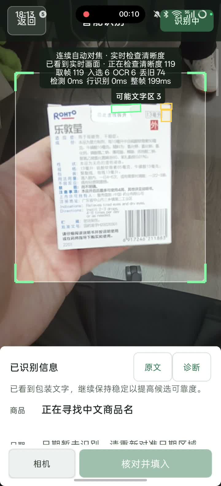
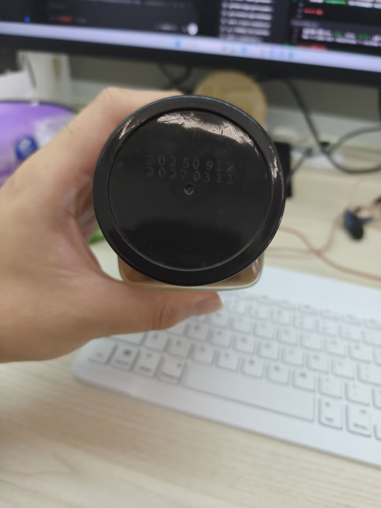

8月31日 周一
今天先处理这些
按最终日期和库存排序
优先处理
最近操作
酸奶减少 1 盒当前剩余 2 盒
共 18 种商品 · 27 个批次
库存
全部库存 · 最早到期优先
规则和本地数据
设置
提醒
本地数据
识别与应用
商品详情
鲜牛奶
冷藏食品 · 共 3 盒条码 6900000000012 · 默认单位：盒
最早到期优先
2 个批次
批次 …A29F今天到期
- 生产日期
- 2026-08-29
- 最终日期
- 2026-08-31
- 剩余
- 2 / 2 盒
- 保存
- 冷藏 · 未开封
备注：早餐用，开封后尽快处理
批次 …C721正常
- 生产日期
- 2026-08-30
- 最终日期
- 2026-09-04
- 剩余
- 1 / 1 盒
- 保存
- 冷藏 · 未开封
手动可直接完成
新增物品
补货到鲜牛奶商品资料复用，日期和数量按新批次填写
商品
名称必填日期
预计最终日期：2026-09-07
数量与保存
数量必填拍包装识别点一下文字可重新对焦
画面清楚，正在找日期已读到商品名和条码
名称
条码
日期
不会自动保存
核对识别内容
日期还没有读清楚可以直接改，也可以先采用其他内容后手动填写
建议采用
日期未识别不会自动填成“无过期时间”
仅供核对
识别依据
已保留 3 张更清楚的画面。绿色框表示形成了字段，黄色框表示仍需核对。


条码 6900000000012
找到 2 个本机商品
同一个条码可能属于不同商品。请选择这次要补货的档案，系统不会替你决定。
只在相关状态变化时重算
提醒方式
新增批次时计算一次类别、保存方式、开封状态或日期改变时才重新计算
冷藏短保食品提前 2 天
常温食品提前 7 天
药品与个护提前 30 天
适合换手机或临时同步
快速传输
导出 JSON
含商品、条码和独立批次导入 JSON
相同批次 UUID 会预览为更新，不会重复新增。冲突需要你确认。
先预览和校验，再写入
Excel 批量管理
覆盖前先创建校验备份写入或读回失败时完整回滚，当前库存不会被部分替换
inventory-2026-08-31.xlsx
导入预览
12可导入
2需修正
3将更新
错误行
修正文件后重新选择第 6 行 · 生产日期2026-09-18 晚于今天，不能作为生产日期
第 11 行 · 数量新批次数量必须大于 0
写入方式
私有校验备份
备份与恢复
可恢复备份
仅显示校验通过的文件恢复会替换当前库存开始前会再次备份当前数据；失败时保持当前库存不变
普通界面不显示内部耗时
识别与调试
中文包装识别离线模型已就绪可用
日期特写识别低对比度增强已就绪可用